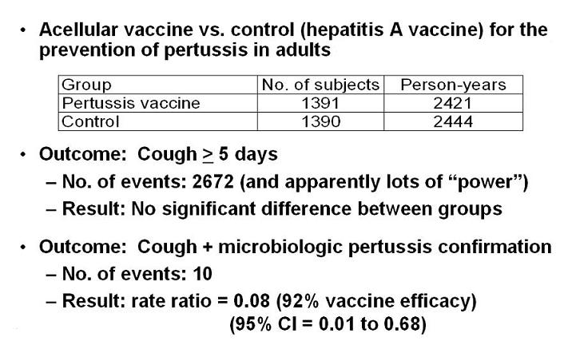

Example of Misclassification Bias
Pertussis Vaccine - 100% Specificity
Lead Author(s): Jeff Martin, MD
Misclassfication Bias
In a cohort study we have a special case of non-differential misclassification of outcome. In these special cases, if there is 100% specificity, there is no penalty for imperfect sensitivity. The following example of the pertussis vaccine will clarify this situation.
Pertussis Vaccine Efficacy
Ward studied the use of a pertussis vaccine in adults.
- As you know, we do get vaccinated as children, but this immunity is now known to wane.
- The question is whether vaccination in adults is efficacious.
- This study randomly assigned pertussis vaccine or a control vaccine (in this case, hepatitis A vaccine was used) to over 2600 adults and adolescents who were followed for nearly 5000 person years.
Outcomes
One of the outcomes looked at was clinical disease defined as cough of 5 or more days of duration.
- With this outcome, there were a whopping 2672 events.
- Plenty of statistical power with this, right? Well, despite this power, there was no significant difference between groups.
When the authors looked at a different outcome, cough plus microbiologic confirmation of pertussis, there were only 10 total events.
- However, virtually all of these were in the non-pertussis vaccine group, resulting in a rate ratio of 0.08, in other words 92% vaccine efficacy.
What happened here: cough alone is a very non-specific way to capture pertussis.
- When the authors tightened up the specificity of their outcome measurement to 100% specificity is when they were able to show the efficacy of the vaccine.
- If they had not done this, the vaccine would have been discarded as non-useful.
Data on Outcomes

To summarize in this study, the efficacy of the pertussis vaccine was studied using two outcomes.
- The first outcome was a cough lasting five or more days.
- The second outcome was a cough plus microbiological confirmation of pertussis. When the second outcome with 100% specificity was used, vaccine efficacy was shown.
References
Ward, J. I., Cherry, J. D., Chang, S. J., Partridge, S., Lee, H., Treanor, J., et al. (2005). Efficacy of an acellular pertussis vaccine among adolescents and adults. N Engl J Med, 353 (15), 1555-156